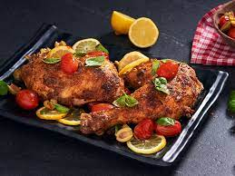

Grilled BBQ Chicken Quarters with Tomatoes, Olives and Basil

A taste like no other, with a touch of Robertsons braai!
A blend of tomatoes, green olives, basil and garlic makes a bright, zesty topping for tender grilled chicken
quarters.
For delicious flavour and rich colour, marinate your chicken ahead of time with Robertsons Braai &
Grill All-In-One, olive oil, tomato paste and lemon juice.
Ingredients
- 4 chicken quarters
- 75 ml (5 Tbsp) olive oil
- 30 ml (2 Tbsp) tomato paste
- 30 ml lemon juice
- 30 ml (2 Tbsp) Robertsons Braai & Grill All-In-One
- 250 g cherry tomatoes, halved
- 100 g pitted green olives, halved
- 15 ml (1 Tbsp) Robertsons Masterblends Zesty Lemon & Herb
- A handful of fresh basil leaves
- 1 clove garlic, peeled and minced
- the zest of 1 lemon
Steps/Instructions
- Trim any excess fat off the chicken thighs and pat dry with kitchen paper.
- In a big bowl, mix together 45ml (3 Tbsp) of the olive oil, the tomato paste,
lemon juice and Robertsons
Braai & Grill All-In-One.
Toss the chicken quarters through the marinade and allow to sit for 30
minutes.
- Preheat your grill to medium. Place the chicken quarters, skin side down, on the grill and allow them to
take on good colour.
Continue cooking and turning the chicken pieces until the skin is crispy and they are
cooked right through.
- Heat another 15ml (1 Tbsp) of the olive oil in a pan, over a high heat. Add the tomatoes,
and cook, tossing occasionally, until they are slightly charred and blistered. Remove from the pan and allow
to cool slightly.
- Tip the roasted tomatoes into a bowl and add the remaining 15ml (1 Tbsp) olive oil together with the
olives,
Robertsons Masterblends Zesty Lemon & Herb, fresh basil leaves, garlic and lemon zest.
- Place the chicken pieces on a platter and scatter over the tomato olive mixture.